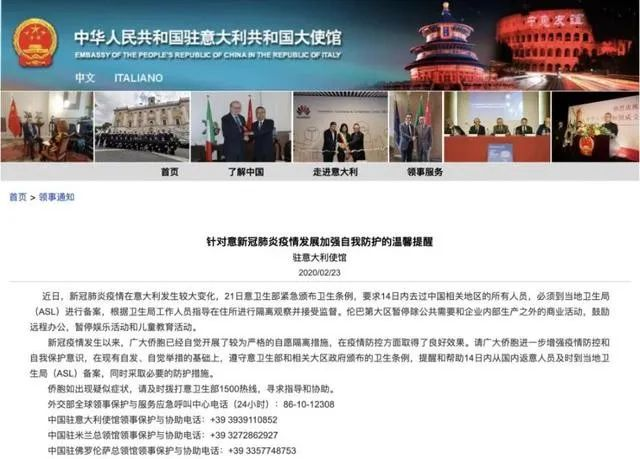

意甲推迟、学校停课、超市抢购，意大利因何成疫情重灾区
原文链接 备份链接 由于确诊病例迅速攀升，意大利成为亚洲国家之外疫情最严重的国家。为了控制病毒的扩散，意大利政府从2月22日起在11个市镇采取了“封城”举措。在被封锁地区，只有持特别通行证者才能出入 2月23日，意大利米兰市中心的大教堂广 …

截至当地时间24日零时，意大利累计确诊157例新冠病毒肺炎感染病例，2人治愈出院，新增1例死亡病例，累计3例死亡病例。据欧联通讯社报道，死者是一位身患癌症的年长女性，确诊被感染新冠肺炎病毒后不治。
意大利紧急民防部部长安吉洛·博雷利(Angelo Borrelli)表示，到目前为止，卫生机构尚未找到引发病毒扩散的“零号”患者。而此前一些地方已经对中国侨民或有过中国旅游史的意大利公民进行过病毒筛除工作。
按确诊人数计，意大利已成欧洲疫情最严重、亚洲以外全世界疫情最严重的国家。


政府宣布11个北部城镇“封城”
为抑制疫情扩散，意大利总理孔特22晚日宣布一系列紧急措施，封锁伦巴第、威尼托等地的11个市镇。约5万人被限制出入，警方将加强管控，必要时会出动军队。
意大利政府指出，违反疫区封锁管制的民众，将被视为犯罪，会受到刑事处罚，最高将被判处3个月的监禁。
总理孔特表示，视疫情发展情况而定，这样的严格管控措施可被套用在其他地区。他暗示，并不排除“意大利暂停签发申根签证”的可能。
这两个大区是意大利的富裕地区与工业心脏，占据全国GDP的30%。而包括金融中心米兰在内，伦巴第大区要求关闭当地全部学校、博物馆与图书馆，取消文化、宗教、体育等公共活动。23日的3场意甲足球比赛也被取消。
由于旅游胜地威尼斯也出现了确诊，威尼托大区行政长官卢卡·扎亚（Luca Zaia）已宣布叫停2月8日至25日的威尼斯狂欢节。从3月1日起，该地区禁止一切公共与私营领域的集会，中小学校、大学与博物馆也将关闭。
奥地利暂停与意大利之间客运列车
北京时间24日消息，奥地利联邦铁路公司（OBB）当地时间周日表示，已暂停了与意大利之间经由布伦纳山口（Brenner Pass）的客运列车服务，以阻止新型冠状病毒进一步传播。
该公司一位发言人表示：“经布伦纳山口与意大利的客运列车已双向停运。”
这一跨越阿尔卑斯山的通道是意大利、奥地利和德国之间一条重要且经常拥堵的客运列车路线。
在宣布暂停之前不久，奥地利政府表示，已拒绝一列从意大利威尼斯开往德国慕尼黑的火车进入，因为怀疑车上两名旅客可能感染了新型冠状病毒。
奥地利内政部长卡尔·内哈默（Karl Nehammer）周日早些时候说，一个应对疫情的工作组将于周一举行会议，讨论是否实施与意大利的边境管制。这种边境管制可以在一小时内建立起来。
奥地利内政部长称，该国现在有181例疑似新型冠状病毒病例，但尚未有确诊病例。
中国驻意大利大使馆发出提醒

北京时间23日，中国驻意大利使馆发布针对意新冠肺炎疫情发展加强自我防护的温馨提醒称，近日，新冠肺炎疫情在意大利发生较大变化，2月21日意卫生部紧急颁布卫生条例，要求14日内去过中国相关地区的所有人员，必须到当地卫生局（ASL）进行备案，根据卫生局工作人员指导在住所进行隔离观察并接受监督。伦巴第大区暂停除公共需要和企业内部生产之外的商业活动，鼓励远程办公，暂停娱乐活动和儿童教育活动。
新冠疫情发生以来，广大侨胞已经自觉开展了较为严格的自愿隔离措施，在疫情防控方面取得了良好效果。请广大侨胞进一步增强疫情防控和自我保护意识，在现有自发、自觉举措的基础上，遵守意卫生部和相关大区政府颁布的卫生条例，提醒和帮助14日内从国内返意人员及时到当地卫生局（ASL）备案，同时采取必要的防护措施。
侨胞如出现疑似症状，请及时拨打意卫生部1500热线，寻求指导和协助。
外交部全球领事保护与服务应急呼叫中心电话（24小时）：86-10-12308
中国驻意大利使馆领事保护与协助电话：+39 3939110852
中国驻米兰总领馆领事保护与协助电话：+39 3272862927
中国驻佛罗伦萨总领馆领事保护与协助电话：+39 3357748753
综合人民日报、央视新闻、环球网、观察者网等


推荐阅读

点击大图 |韩国疫情何以突然暴发？

点击大图 |销量增100%，日均交易增400%，在线理财产品现秒空，风口真到了？

原文链接 备份链接 由于确诊病例迅速攀升，意大利成为亚洲国家之外疫情最严重的国家。为了控制病毒的扩散，意大利政府从2月22日起在11个市镇采取了“封城”举措。在被封锁地区，只有持特别通行证者才能出入 2月23日，意大利米兰市中心的大教堂广 …
原文链接 备份链接 伦巴第大区。图片来源：天空新闻截图 记者：安晶 “ 虽然前三例病例出现在罗马，但疫情并没有在罗马爆发，而是发生在伦巴第大区。 ” 面对新型冠状病毒肺炎疫情的爆发，成为欧洲重灾区的意大利宣布北部11个市镇进入封城隔离，违 …
原文链接 备份链接 体坛周报全媒体驻意大利记者 王勤伯 意大利新冠疫情突然爆发，不少同事、朋友和读者都对我表达了关心，这里就借体坛加APP的一个角落，和大家聊聊我正在经历的意大利疫情。 （1） 先聊一下对意大利卫生防疫系统和本次应对新冠的 …
原文链接 备份链接 全国多数省区已实现“零新增”，统计上未见疫情卷土重来证据，也未发现意味着疫情死灰复燃的个案 文/《财经》数据研究员徐进 图/《财经》视觉中心 编辑/谢丽容 今天是农历二月二“龙抬头”。按北方农村传统，今起春耕大忙开 …
原文链接 备份链接 IMF认为，若一切向好的方向发展，中国经济有望从二季度开始恢复正常。近日个别国家和地区确诊病例激增，确诊首例新冠病毒感染病例的国家和地区也在增加，是新感染群体的感染源越来越难以查明？还是疫情传播到了某个新的临界点？ …